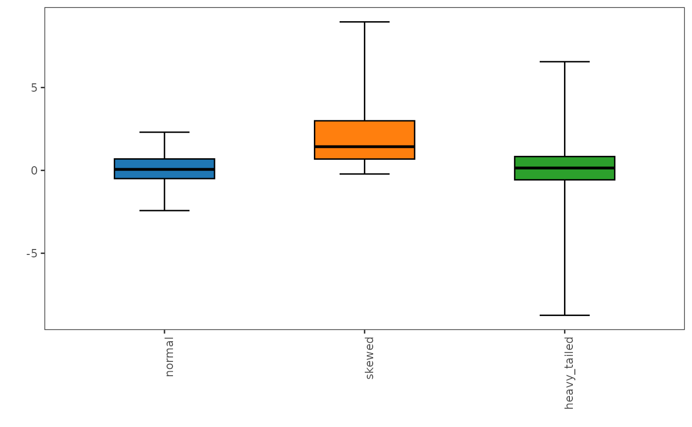

This function implements the generalized boxplot, a robust data visualization technique designed to effectively represent skewed and heavy-tailed distributions, as proposed by Bruffaerts et al. (2014).
Usage
generalized_boxplot(
x,
alpha = 0.05,
p = 0.9,
plot = TRUE,
xlabels.angle = 90,
xlabels.vjust = 1,
xlabels.hjust = 1,
box.width = 0.5,
notch = FALSE,
notchwidth = 0.5,
staplewidth = 0.5
)Arguments
- x
A numeric data frame or tibble.
- alpha
A scalar, between 0 and 1 that specifies the desired detection rate of atypical values.
- p
A scalar, between 0.5 and 1 that specifies the quantile order for estimating g and h.
- plot
Logical value indicating whether to plot the boxplot or return the boxplot statistics.
- xlabels.angle
A numeric value specifying the angle (in degrees) for x-axis labels (default is 90).
- xlabels.vjust
A numeric value specifying the vertical justification of x-axis labels (default is 1).
- xlabels.hjust
A numeric value specifying the horizontal justification of x-axis labels (default is 1).
- box.width
A numeric value specifying the width of the boxplot (default is 0.5).
- notch
A logical value indicating whether to display a notched boxplot (default is
FALSE).- notchwidth
A numeric value specifying the width of the notch relative to the body of the boxplot (default is 0.5).
- staplewidth
A numeric value specifying the width of staples at the ends of the whiskers.
Value
If
plot = TRUE, returns aggplot2object containing the generalized boxplot.If
plot = FALSE, returns a list of tibbles with the generalized boxplot statistics and potantial outliers.
Details
This method extends the adjusted boxplot method by leveraging the flexible Tukey's g-and-h parametric distribution to model the underlying data structure, particularly for asymmetric or long-tailed datasets, providing a more nuanced and informative summary of the data's central tendency, spread, and potential outliers.
References
Bruffaerts, C., Verardi, V., Vermandele, C. (2014). A generalized boxplot for skewed and heavy-tailed distributions. Statistics and Probability Letters 95(C):110–117
Examples
set.seed(123)
data <- data.frame(
normal = rnorm(100),
skewed = rexp(100, rate = 0.5),
heavy_tailed = rt(100, df = 3)
)
# Plot the generalized boxplot
generalized_boxplot(data)

# Retrieve the generalized boxplot statistics
generalized_boxplot(data, plot = FALSE)
#> $stats
#> # A tibble: 3 × 6
#> variable lower q1 median q3 upper
#> <fct> <dbl> <dbl> <dbl> <dbl> <dbl>
#> 1 normal -2.42 -0.494 0.0618 0.692 2.31
#> 2 skewed -0.217 0.685 1.43 2.99 8.96
#> 3 heavy_tailed -8.74 -0.569 0.146 0.835 6.56
#>
#> $outliers
#> # A tibble: 0 × 3
#> # ℹ 3 variables: variable <fct>, out <chr>, value <dbl>
#>